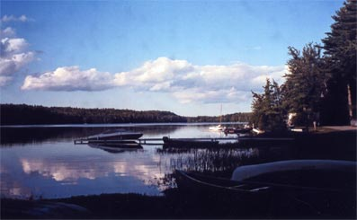

|
Visit :
Make Ayers Lake Farm your
headquarters
Lakes Region - Lake Winnipesaukee,
White Mountains - Just 70
miles to the highest mountains
Blue Job Mountain - for
the less ambitious,
Atlantic Ocean - N.H. and
Maine beaches, clambakes, L.L. Bean - 75 miles.
Barrington has many geocaching spots.
Strawberry Banke - outdoor history museum located in Portsmouth, 20 minutes away. The Childrens Museum of New Hampshire at Dover, 14 miles. Water Country - 30 miles Isles of Shoals, whale watching, and deep sea fishing, all depart from Portsmouth and Seacoast region.
Hike in the Town Forest or on the
GonicTrails. Fly fish and hike at Stonehouse pond. Antique shops - at Northwood, Dover & Rochester Calefs Country Store and Christmas Dove - in Barrington Discount shops - Kittery, ME, 28 miles away North Conway, NH - only 56 miles Golf - 18 holes at nearby Nippo Lake Golf Club University of New Hampshire at Durham - 15 miles Geocaching spots locally
Rochester Fair - end of September, 10 minute
drive
New Hampshire Farm Museum - 12 miles Simply enjoy being at Ayer's Lake!  |
|
|
|
Phone: (603) 335-1110 |